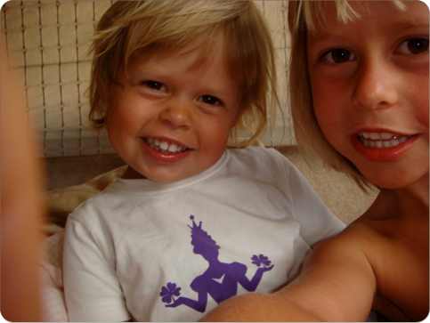

Violas Naturdagbog
Violas Naturdagbog
Jeg fotograferer
Jeg er blever ret god til at tage billeder på turen - jeg tager rigtig mange, og en gang imellem holder jeg kameraet på skrå, så bliver det sjovere at kigge på. Her har jeg taget ca. 25 billeder af Stella og jeg.
mandag den 18. februar 2008
